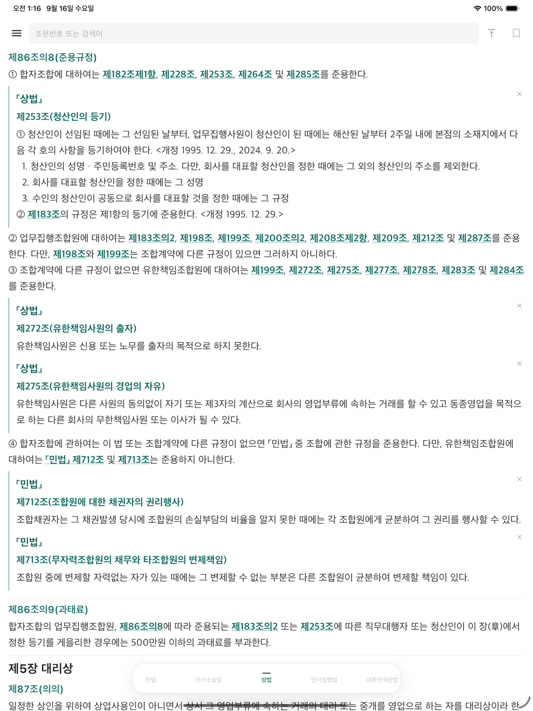
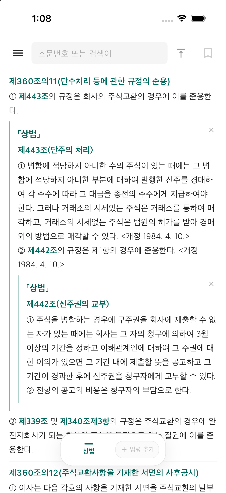

조문에서 조문으로.
읽는 흐름은 그대로.
밑줄 친 인용을 누르면 관련 조문이 바로 아래에 펼쳐집니다. 연결 가능한 시행령·시행규칙과 펼친 조문 안의 인용까지 이어서 확인하세요.
LESS, BUT BETTER.
iPhone·iPad에서 법령을 찾고, 인용 조문을 이어 읽으세요.
iPhone · iPad App Store에서 다운로드무료로 시작하세요.
LAW. — SIMPLE BY DESIGN
필요한 법령을 찾고, 연결된 조문을 펼치고.
자주 보는 법령을 나만의 구성으로 모으세요.
iPhone · iPad / 간결하게 읽는 법전


법을 읽는 데 필요한 것에 집중했습니다.
밑줄 친 인용을 누르면 관련 조문이 바로 아래에 펼쳐집니다. 연결 가능한 시행령·시행규칙과 펼친 조문 안의 인용까지 이어서 확인하세요.
여러 법령을 탭으로 열고, 길게 눌러 순서를 바꾸세요. 자주 쓰는 조합은 이름을 붙여 저장하고 다시 불러올 수 있습니다.
A LITTLE HELP
자주 묻는 질문부터 확인해 보세요.
찾는 답이 없다면 직접 알려주세요.
다운로드한 법령 본문은 기기에 저장됩니다. 새로운 법령의 검색·다운로드, 업데이트 및 아직 저장하지 않은 인용 조회에는 인터넷 연결이 필요합니다.
인터넷 연결을 확인하고 다시 시도해 주세요. 일부 인용은 공식 자료의 연결 상태나 제공 범위에 따라 표시되지 않을 수 있습니다. 계속 문제가 생기면 법령명과 조문번호를 문의 이메일로 보내주세요.
설정의 ‘임시 데이터’에서 인용 조문 캐시를 삭제하면 눌러서 받아온 인용 본문을 정리합니다. 저장한 법령 본문과 링크 정보, 즐겨찾기 및 커스텀 탭바는 유지됩니다.
왼쪽 메뉴의 ‘현재 법령 다시 불러오기’를 이용하세요. 중요한 판단에 활용하기 전에는 국가법령정보센터에서 적용 시점과 원문을 확인해 주세요.
GET IN TOUCH
불편한 점이나 잘못 연결된 인용을 알려주세요. 법령명·조문번호, 앱 버전, 기기 및 운영체제 버전을 함께 보내주시면 확인에 도움이 됩니다.
화면을 첨부할 때에는 개인적인 정보가 포함되지 않도록 확인해 주세요.
국가법령정보센터 Open API 및 공식 법령 자료를 이용합니다. 본 앱은 정부기관이 제공하는 공식 앱이 아닙니다. 인용 연결과 조회는 제공되는 자료 및 통신 상태에 따라 제한될 수 있습니다. 중요한 판단에 활용하기 전에는 적용 시점과 원문을 확인해 주세요.
국가법령정보센터 방문하기 ↗